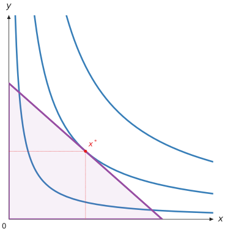
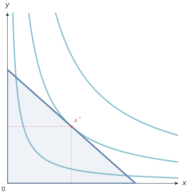
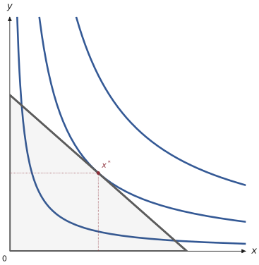
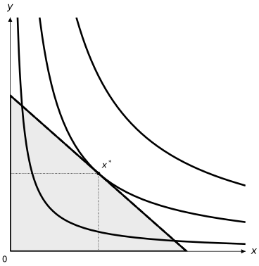
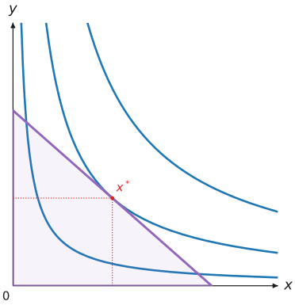

主題與設定
Theme 定義圖形的預設外觀；Config 從 TOML 檔案載入主題覆寫與字型設定。Canvas、Figure、DemandDiagram、價格效果分解及 EdgeworthBox 共用這些樣式物件。
內建主題
themesPython API 提供下列主題。主題物件不可變；需要調整欄位時，可建立新的 Theme，或以 Config 覆寫指定欄位。
EconViz 手冊與 playground 的黑白樣式：白底、黑色座標軸與點、灰色曲線，適合列印與講義
透明背景上的色盲友善配色，適合一般用途
與 default 相同的配色，以明確名稱標示
採用 Nord 色盤的冷色系，適合螢幕與投影片
透明背景上的柔和色彩與較細線條，適合論文
只用黑色，以線型與標記區分圖層，適合黑白列印
色彩較鮮明，線條、標記與標籤分別放大為 1.5、1.3 與 1.25 倍，適合投影
Python API、設定檔的 base 與命令列的 --theme 都接受這七個名稱。同一名稱在各 EconViz 套件中外觀一致：每個主題為各個角色（ink、primary、constraint、accent 等）指定顏色，再由 utility-viz 決定各元素使用哪個角色（utility_viz.core.themes.roles）。無異曲線使用 primary，預算線使用 constraint，均衡點與其他點使用 accent，座標軸與標籤使用 ink。線寬與點的大小由 utility-viz 自行決定，主題只會依比例縮放。
內建主題不含深色主題。themes.dark、base = "dark" 與 --theme dark 在整個 2.x 會發出 UtilityVizDeprecationWarning 並改用 default；需要不透明背景時，請在 [color] 設定 background。
預設主題的顏色取自一組色盲友善的配色 {thriveth} (2014)。
themes.COLORBLIND_CYCLE_HEX 與 themes.COLORBLIND_CYCLE_RGB 提供這組配色的十六進位與 RGB 值。經濟學教學大量依賴圖形，因此不應只靠顏色傳達意義，以免視覺障礙的學生無法辨識 Kugler (1996)。
下列各圖以五個內建主題畫出同一張 Cobb-Douglas 圖，線寬沿用本手冊，底色為白色。本手冊其餘各圖都採用 manual，colorblind 的配色則與 default 相同。
from dataclasses import replace
from utility_viz import Canvas, levels, solve, themes
from utility_viz.models import CobbDouglas
model = CobbDouglas(alpha=0.5, beta=0.5)
eq = solve(model, px=2.0, py=3.0, income=30.0)
# 主題配色搭配手冊線寬
theme = replace(
themes.default,
background_color="#ffffff",
ic_linewidth=2.6,
budget_linewidth=2.6,
eq_markersize=5.0,
)
cvs = Canvas(
x_max=20,
y_max=15,
x_label="$x$",
y_label="$y$",
theme=theme,
)
cvs.add_utility(model, levels=levels.around(eq.utility, n=3))
cvs.add_budget(2.0, 3.0, 30.0, fill=True)
cvs.add_equilibrium(eq)
cvs.save("theme_default.png")

default 主題
from dataclasses import replace
from utility_viz import Canvas, levels, solve, themes
from utility_viz.models import CobbDouglas
model = CobbDouglas(alpha=0.5, beta=0.5)
eq = solve(model, px=2.0, py=3.0, income=30.0)
# 主題配色搭配手冊線寬
theme = replace(
themes.nord,
background_color="#ffffff",
ic_linewidth=2.6,
budget_linewidth=2.6,
eq_markersize=5.0,
)
cvs = Canvas(
x_max=20,
y_max=15,
x_label="$x$",
y_label="$y$",
theme=theme,
)
cvs.add_utility(model, levels=levels.around(eq.utility, n=3))
cvs.add_budget(2.0, 3.0, 30.0, fill=True)
cvs.add_equilibrium(eq)
cvs.save("theme_nord.png")

nord 主題
from dataclasses import replace
from utility_viz import Canvas, levels, solve, themes
from utility_viz.models import CobbDouglas
model = CobbDouglas(alpha=0.5, beta=0.5)
eq = solve(model, px=2.0, py=3.0, income=30.0)
# 主題配色搭配手冊線寬
theme = replace(
themes.paper,
background_color="#ffffff",
ic_linewidth=2.6,
budget_linewidth=2.6,
eq_markersize=5.0,
)
cvs = Canvas(
x_max=20,
y_max=15,
x_label="$x$",
y_label="$y$",
theme=theme,
)
cvs.add_utility(model, levels=levels.around(eq.utility, n=3))
cvs.add_budget(2.0, 3.0, 30.0, fill=True)
cvs.add_equilibrium(eq)
cvs.save("theme_paper.png")

paper 主題
from dataclasses import replace
from utility_viz import Canvas, levels, solve, themes
from utility_viz.models import CobbDouglas
model = CobbDouglas(alpha=0.5, beta=0.5)
eq = solve(model, px=2.0, py=3.0, income=30.0)
# 主題配色搭配手冊線寬
theme = replace(
themes.monochrome,
background_color="#ffffff",
ic_linewidth=2.6,
budget_linewidth=2.6,
eq_markersize=5.0,
)
cvs = Canvas(
x_max=20,
y_max=15,
x_label="$x$",
y_label="$y$",
theme=theme,
)
cvs.add_utility(model, levels=levels.around(eq.utility, n=3))
cvs.add_budget(2.0, 3.0, 30.0, fill=True)
cvs.add_equilibrium(eq)
cvs.save("theme_monochrome.png")

monochrome 主題
from dataclasses import replace
from utility_viz import Canvas, levels, solve, themes
from utility_viz.models import CobbDouglas
model = CobbDouglas(alpha=0.5, beta=0.5)
eq = solve(model, px=2.0, py=3.0, income=30.0)
# 主題配色搭配手冊線寬
theme = replace(
themes.presentation,
background_color="#ffffff",
ic_linewidth=2.6,
budget_linewidth=2.6,
eq_markersize=5.0,
)
cvs = Canvas(
x_max=20,
y_max=15,
x_label="$x$",
y_label="$y$",
theme=theme,
)
cvs.add_utility(model, levels=levels.around(eq.utility, n=3))
cvs.add_budget(2.0, 3.0, 30.0, fill=True)
cvs.add_equilibrium(eq)
cvs.save("theme_presentation.png")

presentation 主題
自訂主題
Theme主題識別名稱。
圖形與座標區域的背景色；None 保持透明。
一般標籤字級的倍率。
座標軸顏色。
座標標籤與原點文字顏色。
無異曲線顏色。
無異曲線線寬。
非焦點無異曲線顏色；None 沿用 ic_color。
非焦點無異曲線線寬。
非焦點無異曲線透明度。
PCC 與 ICC 路徑顏色。
預算線顏色。
預算集合陰影透明度。
均衡點與投影線顏色。
均衡點標記大小。
Theme 保存圖形元素的顏色、線寬與樣式預設值。未指定的欄位使用類別預設值；繪圖方法明確收到的樣式參數優先於主題。
Theme 也包含射線、拗折點、補償預算線與價格效果箭頭的顏色和線寬。axis_stroke、drop_stroke、projection_stroke、guide_stroke 與 box_stroke 保存其他線條的預設值；標記、標籤、填色及圖例則由 Marker、Label、Fill 與 Legend 屬性提供（詳見樣式）。
設定檔
Config.load
Config.use
Config.resetConfig.load() 讀取 TOML 檔案並回傳 Config。use() 將其設為後續圖形的預設設定；reset() 恢復內建預設值。
教學：統一樣式
同一份講義或論文的圖形，通常要共用相同的顏色與線條。與其在每個 Canvas 重複傳入參數，不如把樣式寫在專案根目錄的 econ-viz.toml。Python、命令列與其他 EconViz 套件都讀取同一份檔案，並由 mosaickit 統一解析。
檔案的頂層放置所有套件共用的設定：base、[font]、[fonts]，以及 [color] 中的 background、axis 與 label 顏色。utility-viz 自身的設定放在 [utility] 下；其他套件各有自己的表格，例如 [principle]，utility-viz 會略過這些表格。
- 建立範本。在專案根目錄執行下列指令，會產生含註解的
econ-viz.toml，列出每個表格可用的名稱與欄位：
範本中的設定預設都是註解；只保留需要修改的項目即可，其餘可以刪除。
- 設定共用的字型與顏色。字型寫在
[font]的text（"sans"、"serif"或"mono"）與math（數學字型的路徑），字型檔寫在[fonts]的sans、serif、mono，每項可為一個檔案或檔案清單。相對路徑以 TOML 檔所在資料夾為準：
[font]
text = "serif"
math = "fonts/texgyrepagella-math.otf"
[fonts]
serif = ["fonts/texgyrepagella-regular.otf", "fonts/texgyrepagella-bold.otf"]
[color]
background = "#ffffff"
- 覆寫 utility-viz 的元素。在
[utility]下只寫出要改的欄位：
[utility.color]
ic = "#1B4F72"
eq = "#C0392B"
[utility.stroke.budget]
width = 1.6
style = "dashed"
[utility.marker.eq]
size = 5
[utility.label.point]
fontsize = 11
position = "right"
top = "2pt"
表格名稱對應主題屬性：[utility.color] 的 ic 對應 ic_color，[utility.stroke.budget] 對應 theme.budget_stroke；表格內的欄位就是 Stroke、Marker、Label、Fill、Legend 的參數（詳見樣式）。[utility.label.<name>] 中的 top、bottom、left 與 right 會把該類標籤全部微調一段距離，單位可用 pt、mm、cm 或 in。省略的欄位保留基底主題的值。
- 在 Python 中套用。在建立任何圖形之前載入一次：
此後建立的 Canvas、Figure、DemandDiagram 與 EdgeworthBox 都使用這組設定；呼叫 Config.reset() 可恢復內建預設值。mosaickit.econ_toml.use("econ-viz.toml") 則會一次為所有已安裝的 EconViz 套件載入此檔。
- 在命令列套用。
utility-viz plot會自動讀取目前目錄的econ-viz.toml；要使用其他檔案時，以--config指定設定檔：
utility-viz plot --config econ-viz.toml --model cobb-douglas \
--px 2 --py 3 --income 30 --output figure.png
設定的優先順序由高到低為：直接傳入 Canvas 或繪圖方法的參數、設定檔、基底主題。例如 Canvas(theme=themes.default) 會略過設定檔中的主題。
設定檔寫錯時，Config.load() 會拋出 InvalidParameterError，指出檔案與表格，並在有相近名稱時提示可能的正確寫法。例如把 [utility.stroke.budget] 誤寫成 [utility.stroke.budgt]：
econ-viz.toml: [utility.stroke.budgt] no such setting; did you mean 'budget'? (choose: axis, box, budget, ...)
設定檔查找順序
Config.discover(path, directory=None)尋找並讀取設定檔；找不到時不會出錯。
Config.load()、Config.discover() 與 utility-viz plot 依下列順序決定設定檔：
- 明確指定的路徑（
Config.load("file.toml")或--config）：檔案必須存在，且只讀取該檔； - 目前目錄（或
directory=）中的econ-viz.toml； utility-viz.toml（2.0 測試版至 2.0.0b6 使用的名稱），並發出棄用警告；- 內建預設值。
兩個檔案同時存在時，以 econ-viz.toml 為準，utility-viz.toml 會被略過並發出警告。兩個函式只在找不到檔案時有差異：Config.load() 與 1.x 相同，拋出 InvalidParameterError（"config file not found"）；Config.discover() 則回傳內建預設值。
為 2.0.0b7 以前版本撰寫的設定檔，把 utility-viz 的表格放在頂層（[color] ic、[stroke.budget]、[legend] 等）。這類檔案在 3.0 以前仍可讀取，每次載入會發出一次 UtilityVizDeprecationWarning，指出各表格的新位置；同一個鍵同時出現在 [utility] 與頂層時，以 [utility] 為準。utility-viz init --migrate 會把這些表格移到 [utility] 下，並保留註解（詳見建立設定檔）。